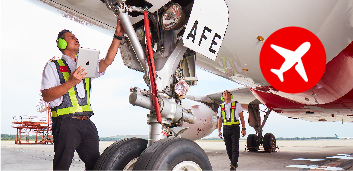

Airasia is 20 years old! To mark this milestone, we are looking at 20 ways we have reshaped the aviation industry, disrupted the digital space, and transformed the lives of our communities. When Datuk Kamarudin Meranun and Tony Fernandes founded airasia two decades ago, most people could not afford air travel and flights to places like Chiang Rai in Thailand and Banding in Indonesia were virtually unheard of. Travel within Asean usually took several days over land and sea. airasia started with two Boeing 737s, one destination (Langkawi in Malaysia) and only 250 Allstars braving through some very tough times, including flooded tarmacs, delayed flights, bird strikes—and the aftermath of 9/11 on the air travel industry. But we never stopped. Fast-forward 20 years later and we have transformed into what we are today - a digital company anchored on travel and lifestyle, still making dreams come true.
